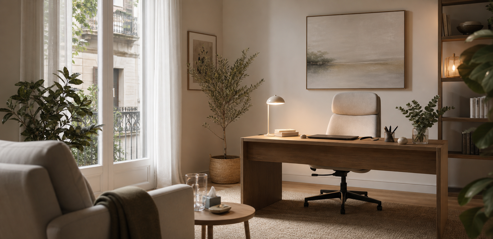

Primera consulta
Una explicación amable del primer encuentro y de cómo se trabaja.
Aire Serena
Consulta de psicología
Diseño para consulta terapéutica
Esta propuesta utiliza más aire, más silencio visual y una narrativa más humana para que la primera impresión transmita confianza y cuidado.

Ambiente
Luz natural, privacidad y un espacio que invita a bajar el ritmo.
Tono
Cálido, respetuoso y claro.
Objetivo
Que la web ayude a dar el primer paso sin sensación de prisa ni sobrecarga.
Reserva simple
Un formulario breve y una llamada a la acción muy limpia para concertar cita.
Servicios
La composición busca dar sensación de pausa. Las secciones son muy legibles y permiten explicar la consulta con un lenguaje cercano y profesional.
Una explicación amable del primer encuentro y de cómo se trabaja.
Acceso rápido a reserva de sesión, presencial u online.
Bloques claros para ansiedad, duelo, pareja, autoestima o trauma.
Formas de contacto que no abruman y mantienen privacidad.
Enfoque visual
La web se inspira en una consulta real: tonos cálidos, una imagen principal acogedora y bloques que dejan espacio para respirar.
01
Confianza
La primera impresión es serena y profesional.
02
Legibilidad
El contenido se entiende rápido y sin estrés visual.
03
Cercanía
El tono habla como una persona, no como una clínica fría.
Estructura de la web
Trayectoria, enfoque y valores, contados con un tono humano.
Explicación clara del proceso terapéutico y del tipo de acompañamiento.
Bloques de texto sencillos para cada motivo de consulta.
Llamada a la acción elegante, rápida y respetuosa.
Contacto
La pieza final busca convertir visitas en consultas, sin presionar y con una sensación de cuidado constante.